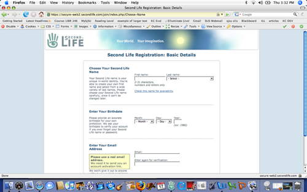
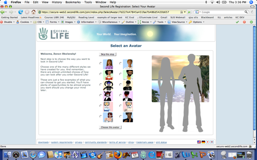

Tools
From SLIS Second Life Wiki
How to get an avatar for use in SL
1. Go to https://secure-web0.secondlife.com/join/ . You will arrive at the registration page where you will set up your Second Life account.
2. Register for Second Life

{kind=link}
- create a username. Your first name can be anything you like and your last name is chosen from a list of available names. For the purposes of this tutorial I made up the name Zenon, and chose Obolensky from the list of available last names.
- enter your birthdate
- enter your email address
3. Select an avatar

{kind=link}
- choose from 12 avatar shapes (6 male and 6 female). Don’t worry, you will be able to alter yourself later by changing your hair, clothes, and more
- Enter your real information
- Enter your real first name, last name, gender, and country.
- Choose a password, and fill out a security question answer in case you forget your password
- If you would like to get email, have a promotion code, or were referred by someone, enter that information now.
4. Enter the code shown , and agree to terms of service
- Choose whether or not to upgrade to premium account status. For more information on the difference between premium or free accounts, please visit http://secondlife.com/whatis/plans.php. For the purposes of taking a class in Second Life a premium account is not necessary.
5. Your account has been created! Check your email to confirm your account
- Click on the email link and you will be transported to the page where you download the Second Life client.